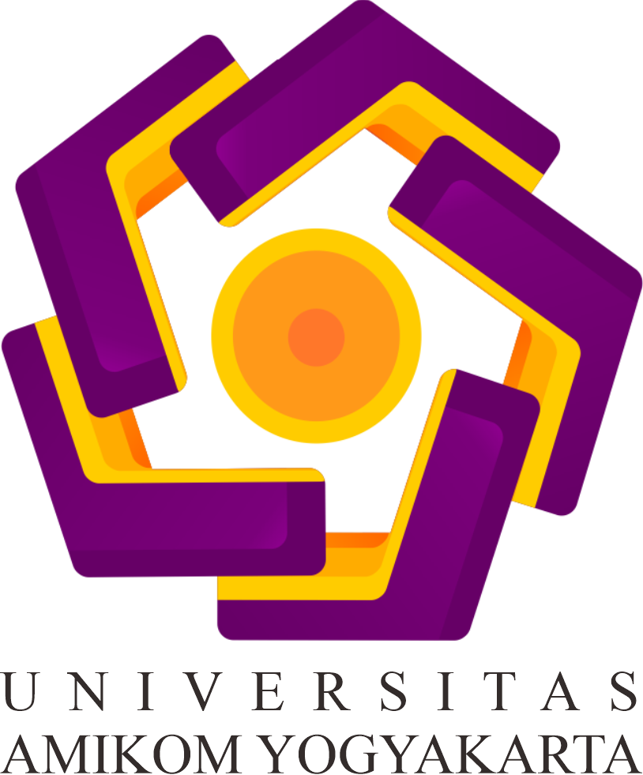

Universitas Amikom Yogyakarta merupakan salah satu Perguruan Tinggi Swasta di Yogyakarta yang saat ini memiliki 3 Fakultas yaitu Fakultas Ilmu Komputer, Fakultas Ekonomi dan Sosial, dan Fakultas Sains dan Teknologi. Universitas Amikom Yogyakarta menurut QS Stars dalam Computer Science and Information Systems merupakan Tinggi Swasta Rating Terbaik di Indonesia.
Universitas Amikom Yogyakarta adalah menjadi perguruan tinggi unggulan dunia dalam bidang ekonomi kreatif yang berbasis kewirausahaan yang menebar kebajikan.
Perguruan tinggi unggulan dunia merupakan perguruan tinggi yang masuk daftar 750 perguruan tinggi yang dikeluarkan oleh QS Ranking pada 2025 dan Perguruan tinggi unggulan dunia merupakan perguruan tinggi yang masuk daftar 500 perguruan tinggi yang dikeluarkan oleh QS Ranking pada 2030.
CREATIVE ECONOMY PARK